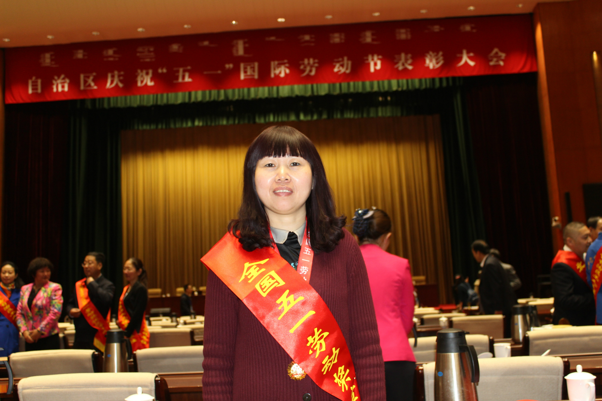

Strikingly awesome Flash templates from TemplateMonster - they really rule!
劳动礼赞 ｜ 张建英：针盘上“舞”出精彩人生
编前语： 五月，是一首激情澎湃的劳动赞歌；五月，是一卷描绘劳动之美的七彩画卷。生活因劳动而美丽，人生因劳动而精彩。
五一前夕，又传来喜讯，鄂尔多斯集团绒纺事业部样品厂的上领工张建英荣获全国五一劳动奖章，鄂尔多斯羊绒集团总经理王臻、电冶集团技术中心韩照日格图荣获内蒙古自治区五一劳动奖章，电冶集团总经理张奕龄获得鄂尔多斯市劳动模范荣誉称号，让我们向先进致敬，向劳模学习！
平凡孕育伟大，劳动创造未来。在集团36年的发展征程中，涌现出来一批又一批像张建英一样的先进工作者和劳动模范，他们积极投身集团的事业中，爱岗敬业、争创一流、艰苦奋斗、勇于创新、淡迫名利、甘于奉献，在各自平凡的岗位上做出了不平凡的业绩和贡献，为集团的发展壮大做出了不可估量的贡献。
在这充满劳动者荣光的五月，我们特别策划了《劳动礼赞》专栏，将陆续与您分享先进、劳模的奋斗故事和感人事迹，希望用他们的先进事迹感召集团的四万之众，用他们的优秀品质引领企业干事创业的新风尚。在这最美的五月，让我们一起聆听那一曲曲关于劳动的赞歌！

2017年4月28日。
自治区庆祝“五一”国际劳动节表彰大会在呼和浩特举行。
会前，自治区党委书记、人大常委会主任李纪恒会见先进模范代表，他强调，劳动最光荣、劳动最崇高、劳动最伟大、劳动最美丽，要弘扬劳模精神劳动精神工匠精神，靠劳动成就梦想铸就辉煌。
内蒙古鄂尔多斯投资控股集团有限公司上领工张建英作为全区17名获得全国五一劳动奖章的人员之一，受到了嘉奖。
表彰大会结束的当天下午，张建英来不及看一看呼和浩特五月的桃花，便匆匆赶回了自己的工作岗位。她说“大道理我讲不来，集团几万人，能够让我得到这么高的荣誉，我得更加好好地干好自己本职工作，才对得起这块奖章”。
一周之前，接到去呼和浩特市参加自治区五一国际劳动节表彰大会的通知后，张建英很是高兴了一阵子，但很快，她就又归于平静，像往常一样，继续在自己上领的工岗上紧张地工作了。
张建英的双手， 犹如一只灵动的蝴蝶，在针盘上上下舞动、翻飞.......几分钟一件羊绒衫的领子就上好了。
上领，是制作羊绒衫30多道工艺程序中，最为重要的一道工序，因为，领型是羊绒衫的“门面”，领型的漂亮与否，决定着一件羊绒衫的完美程度。
近三年来，张建英所上的羊绒衫领子平均年产量在37741件，件件都达标，超出定额产量2.1倍之多，超出企业该岗位平均年产量1.5倍之多，创造了历史上该岗位产量最高记录。
22年，面对着熟悉的上领针盘，她如痴如恋；22年，在同一个岗位上，把一件普通的不能再普通的工序做到了极致，像一个极具耐心的工匠，张建英年复一年，日复一日地雕琢着自己的“作品”，无怨无悔。
表彰大会结束的当天下午，张建英来不及看一看呼和浩特五月的桃花，便匆匆赶回了自己的工作岗位。她说“大道理我讲不来，集团几万人，能够让我得到这么高的荣誉，我得更加好好地干好自己本职工作，才对得起这块奖章”。
一周之前，接到去呼和浩特市参加自治区五一国际劳动节表彰大会的通知后，张建英很是高兴了一阵子，但很快，她就又归于平静，像往常一样，继续在自己上领的工岗上紧张地工作了。
张建英的双手， 犹如一只灵动的蝴蝶，在针盘上上下舞动、翻飞.......几分钟一件羊绒衫的领子就上好了。
上领，是制作羊绒衫30多道工艺程序中，最为重要的一道工序，因为，领型是羊绒衫的“门面”，领型的漂亮与否，决定着一件羊绒衫的完美程度。
近三年来，张建英所上的羊绒衫领子平均年产量在37741件，件件都达标，超出定额产量2.1倍之多，超出企业该岗位平均年产量1.5倍之多，创造了历史上该岗位产量最高记录。
22年，面对着熟悉的上领针盘，她如痴如恋；22年，在同一个岗位上，把一件普通的不能再普通的工序做到了极致，像一个极具耐心的工匠，张建英年复一年，日复一日地雕琢着自己的“作品”，无怨无悔。
不服输的外来妹
张建英老家在重庆市一个偏远山村，自幼家境贫寒，13岁时父亲患病去世，母亲用孱弱的肩膀艰难地担起了这个家，为给母亲减轻负担，张建英没有读完初中就辍学去外面打工。
一个偶然的机会，张建英在电视上听到了“鄂尔多斯羊绒杉，温暖全世界”的这句广告语。鄂尔多斯，这个名字便记在了心中。
1994年，在一个亲戚的介绍下，张建英毅然背起行囊，踏上北上的列车，慕名来到了鄂尔多斯。在这里，她找的第一份工作是当保姆，由于做事干净、利落，为人诚实，雇主对她十分信任，一段时间以后，经这位雇主介绍，张建英成为了当时的鄂尔多斯羊绒衫厂的一名上领工，这一天是1995年的正月初八。
刚开始工作的半年，尽管师傅给予了很多指导和帮助，由于语言不通（大家都讲方言，她也不会讲普通话），在学习的过程中遇到很多困难，各种各样的返工，各式各样的款式，带来不少的困惑。
从小吃惯了苦的张建英同时也炼就了一种“遇到困难迎头上”的执拗劲儿，不会就多问几次，多试几次，做错了就多练几次，把返工做好，一遍十遍千遍……..
凭着这股不服输、爱琢磨的劲，仅工作一年之后，张建英便能熟练地掌握上领这个工种。很快，因为她上领速度快、质量好，手快心细，能在上领过程中找出工艺员设计不合理的地方，并能正确地反馈到工艺设计师的手上，不久便被推选为上领工序的技术指导员。
刚开始工作的半年，尽管师傅给予了很多指导和帮助，由于语言不通（大家都讲方言，她也不会讲普通话），在学习的过程中遇到很多困难，各种各样的返工，各式各样的款式，带来不少的困惑。
从小吃惯了苦的张建英同时也炼就了一种“遇到困难迎头上”的执拗劲儿，不会就多问几次，多试几次，做错了就多练几次，把返工做好，一遍十遍千遍……..
凭着这股不服输、爱琢磨的劲，仅工作一年之后，张建英便能熟练地掌握上领这个工种。很快，因为她上领速度快、质量好，手快心细，能在上领过程中找出工艺员设计不合理的地方，并能正确地反馈到工艺设计师的手上，不久便被推选为上领工序的技术指导员。
我有一个梦
1996年，第一次参加职工代表大会的她，看到会上被表彰的劳模、先进，深受鼓舞，也让她开始了另外一个人生梦想：成为站在领奖台上的他们。
企业新上马精纺产品时，针眼小，上领难度大，返工也大，工艺员对精纺工艺也不熟悉，大家都不愿意去做，这个时候，张建英勇敢站了出来，她愿意去尝试这个有难度的新工作。于是她利用工余时间，勤练习精纺上领，拿着那些废旧的羊绒小片不停地在针盘上练习。一遍没上好，拆下来再上，慢慢地，掌握了上精纺领子的技术与技巧，成品率越来越高，自己也越做越有信心，再凭借之前自己对羊绒产品多年的套扣经验，慢慢带领大家把精纺产品的套扣上领工作胜任起来，现在的张建英完全可以根据手感的松紧度去熟练地对着针口上领，这一切，都源于“熟能生巧”。
有一次，一批精纺产品因为吊染工艺出现问题，下摆以上部分出现色档，因为交期紧，重新编织衣坯再吊染已经来不及，没有办法，只能将此拆掉再活套上下摆袖口，在套扣工序中，最难的就是活套套扣，比活套套扣更难的是精纺产品的活套套扣，当时除了张建英，没有一个人愿意去完成这项工作，张建英每天加班，好几天工作时间都长达18个小时，一周以后，这批问题产品弥补好了，没有耽误工期，顺利交了货。
从此，大家更是对这位“外来妹”刮目相看。
每天，天蒙蒙亮，张建英就会踏上最早一班通勤车来到工作岗位上，看一看手里的活，哪些是急要的，哪些是不那么急要的，哪些是好做的，哪些是不好做的，分类之后做到心中有数，做起来又快又好。期间，如果有同事因为返工不会做请她帮忙，她都会细心指导，或者代帮忙返工。
2013年，张建英梦想成真，终于站到了自治区级劳动者表彰的领奖台上。
随着鄂尔多斯集团的发展壮大，新员工不断进入，张建英早已经是公司里上领工序上一位响当当的技术骨干，很自然地承担了指导和培训新员工的重任。第一批新员工只用了2个月的时间就能独自上岗了。目前，经张建英亲手带出的徒弟几乎个个成为每一个上领工位上的骨干。而她自己，也屡获殊荣，成为鄂尔多斯羊绒集团绒纺事业部上万名一线工人钦佩且学习的标杆。
表彰会结束的时候，鄂尔多斯市总工会副主席李雪招呼所有来自鄂尔多斯市的代表合个影，看到一脸腼腆的张建英站在侧面，硬是让她站在最前面，和自己挨着照相。李雪表示：“张建英能在众多推荐者中，脱颖而出，当选为全国五一劳动奖章，归功于她的忘我工作和不懈努力。获得全国五一劳动奖章，这是我们鄂尔多斯市的骄傲，值得人人敬佩！”
表彰会结束的时候，鄂尔多斯市总工会副主席李雪招呼所有来自鄂尔多斯市的代表合个影，看到一脸腼腆的张建英站在侧面，硬是让她站在最前面，和自己挨着照相。李雪表示：“张建英能在众多推荐者中，脱颖而出，当选为全国五一劳动奖章，归功于她的忘我工作和不懈努力。获得全国五一劳动奖章，这是我们鄂尔多斯市的骄傲，值得人人敬佩！”